START / BEGINNER
Learn the physics
Waveforms, sampling, real diagrams and a sequenced course.
A living knowledge library and research desk connecting signals, frequencies, lawful technology, the public record of military SIGINT, and evidence-aware AI retrieval.
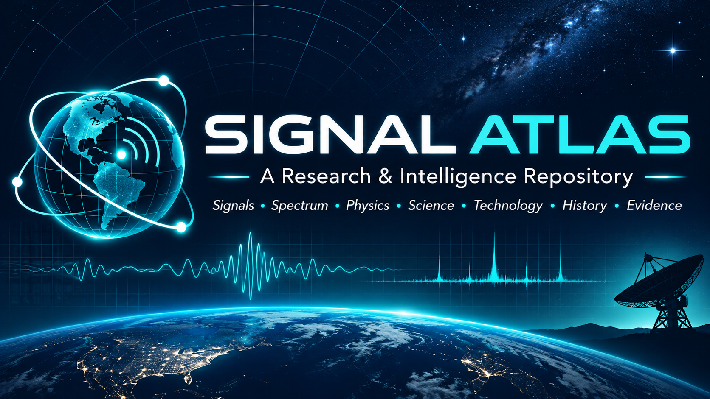
Waveforms, sampling, real diagrams and a sequenced course.
Government sources, historical archives and published oversight.
Understand source provenance, research notes and gaps.
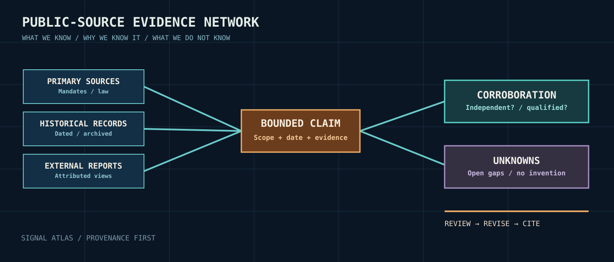
These are entrypoints into institutional missions, history, governance and external assessments. A government describing itself is different from an independent study; absence of public evidence does not imply absence of capability.
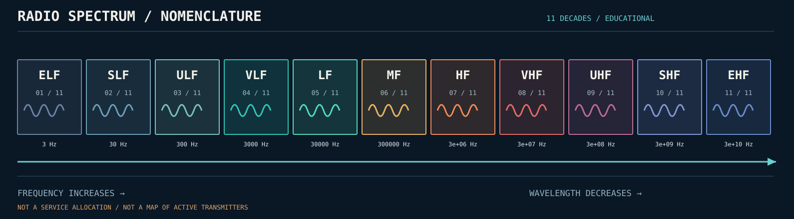
Learn waveform physics, interpretation, legal/regulatory distinctions, RF tooling, global publicly documented military SIGINT, and source criticism. Practical exercises use generated or explicitly authorized data.
Use official records, open standards, institutional archives and peer-reviewed literature. Check site terms, robots, access restrictions, licenses and privacy before retrieving or copying source contents.
Preserve author, date, publisher, URL and rights. Mark government statements about their own missions as self-reports. Mark reports about other states as externally attributed assessments.
A documented statement is not proof of secret capability. Every claim must remain bounded by source scope and date. Unknowns remain open instead of being silently inferred.
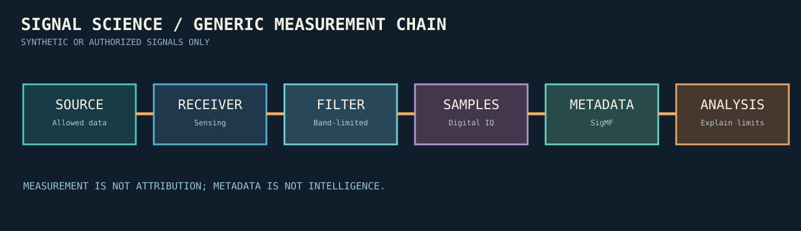
Follow an illustration to its teaching chapter. The graphics are original and use synthetic data—not recordings of real military or private communications.
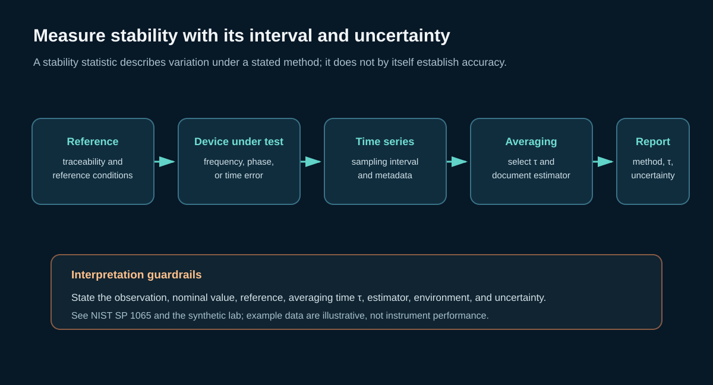
Choose an averaging interval and report the estimator, reference, conditions, and uncertainty.
OPEN LESSON 25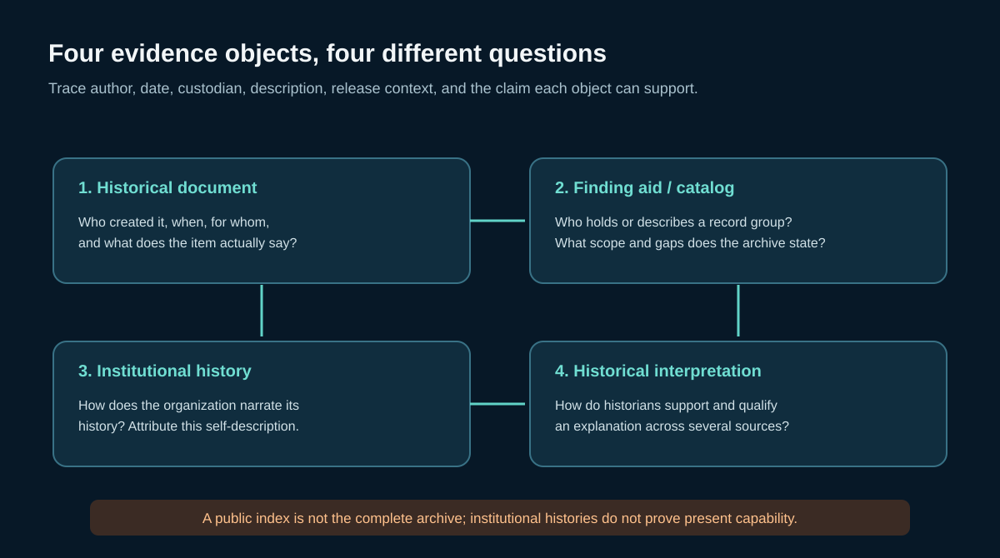
Keep archival description, institutional self-history, document evidence, and interpretation distinct.
OPEN RECORDS GUIDE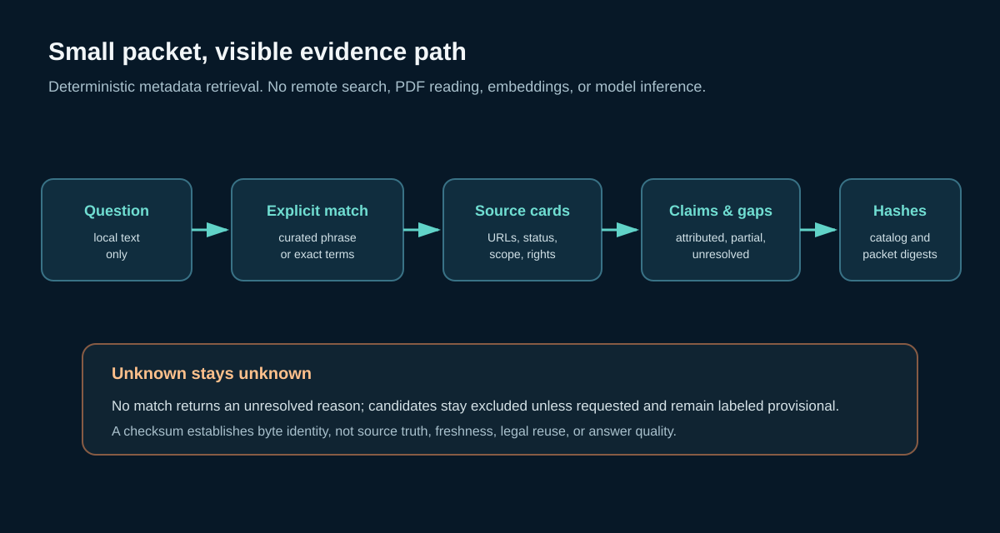
Small packets retain source links, claim status, input hashes, and unresolved requests.
OPEN PACKET FORMAT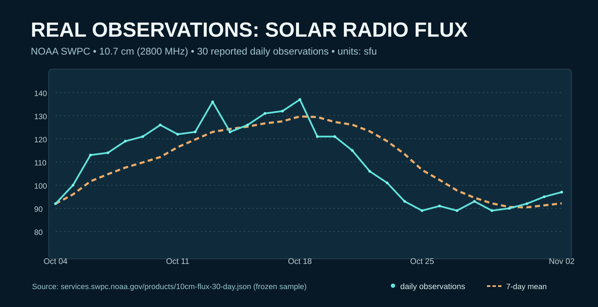
30 published F10.7 measurements show variation in a limited dated window.
READ REAL-DATA LESSON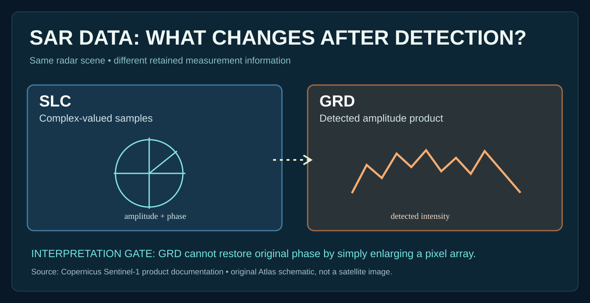
Why measurement transformations may discard information needed for an analysis.
READ SCIENCE LESSON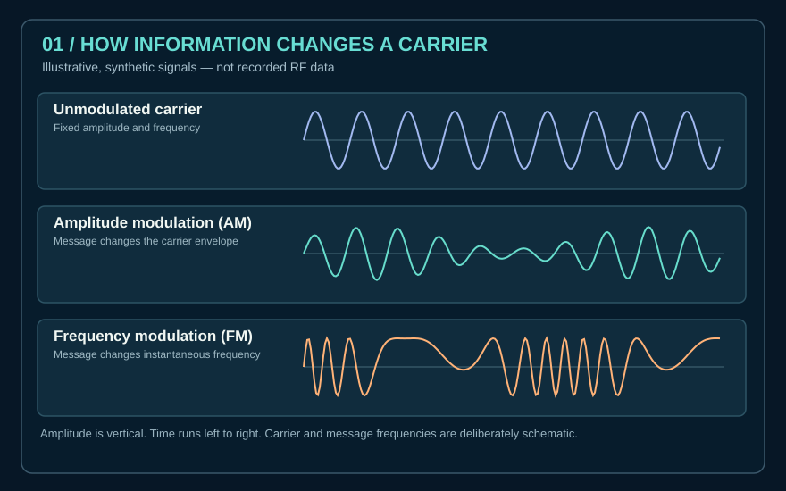
What changes when information is encoded in a carrier?
READ MODULATION LESSON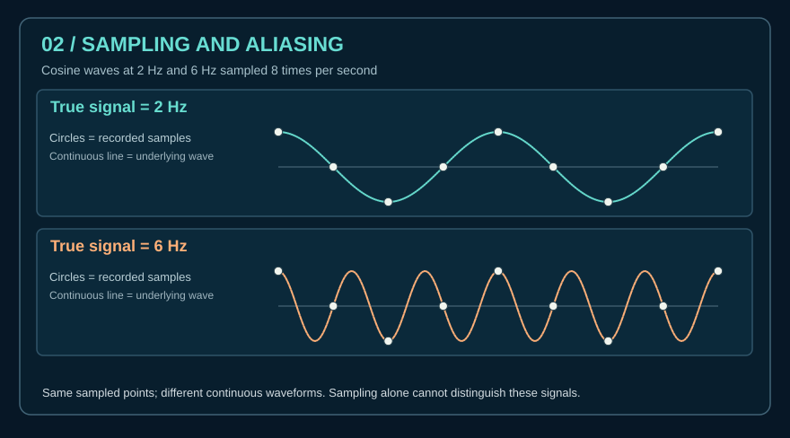
How can two different analog frequencies produce the same digital samples?
OPEN SAMPLING CHAPTER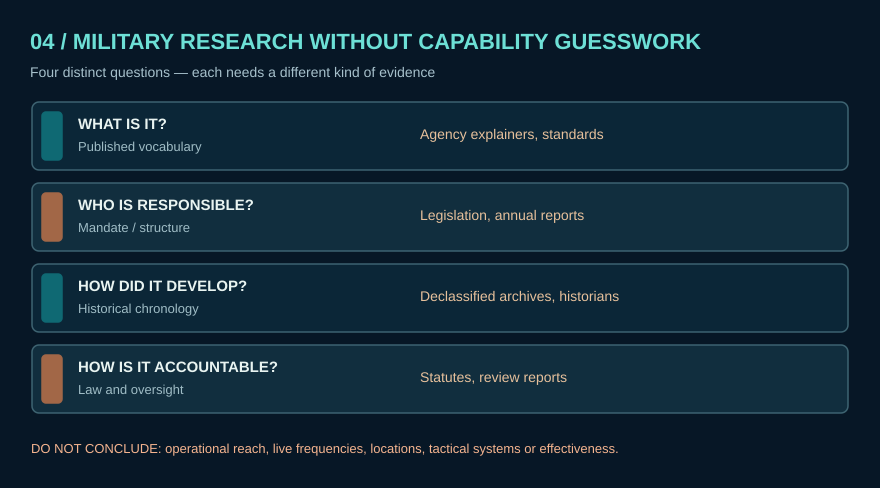
Compare public doctrine without inventing secret capabilities.
READ COMPARATIVE FRAMEWORK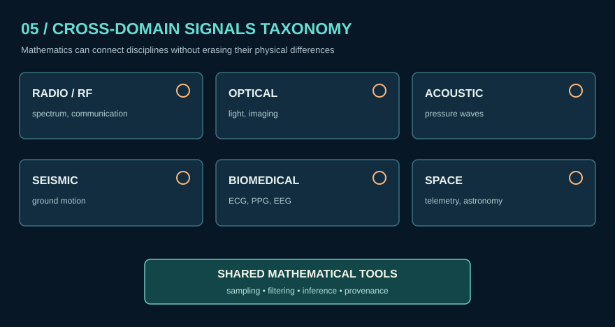
See common mathematical structure without losing physical distinctions.
READ DATA FORMAT LESSON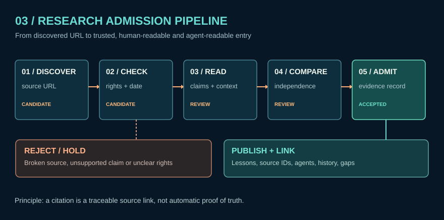
Separate new research candidates from admitted reference material.
OPEN RESEARCH DESKExplore the physical categories before considering regulations or applications.
READ SPECTRUM GUIDE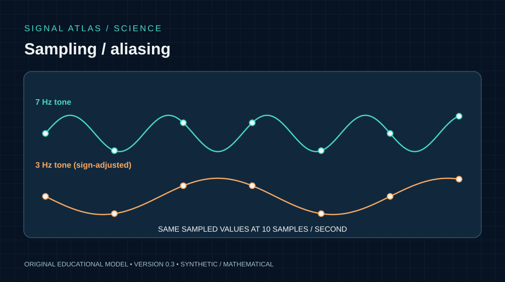
See where apparently different waves give the same samples.
READ ALIASING THEORY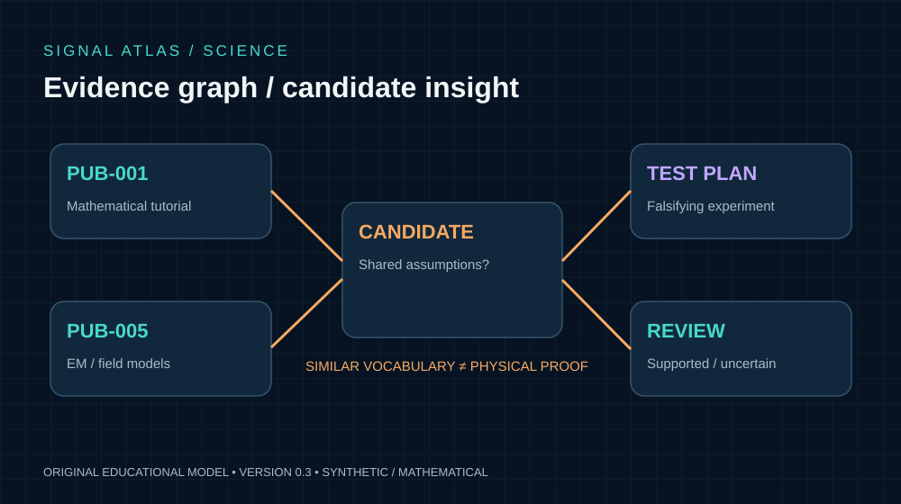
Keep hypotheses visually separate from verified laws.
OPEN HYPOTHESIS METHOD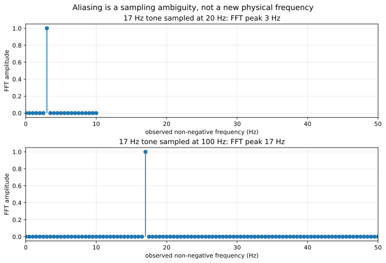
Numerically reproduce a textbook sampling prediction.
REPRODUCE THE EXPERIMENT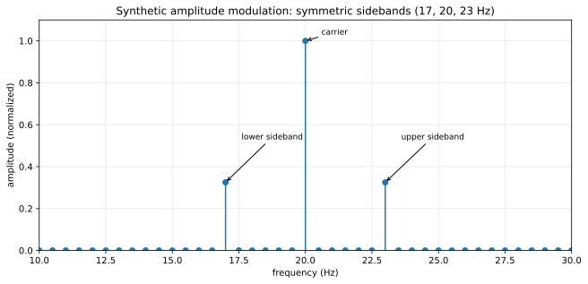
See Fourier measurements, code, assumptions and controls.
READ TEST RESULTS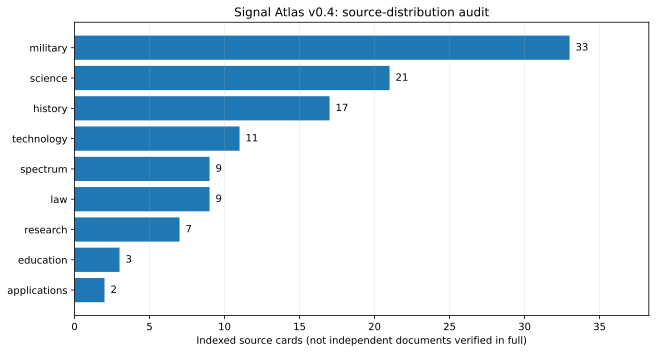
Know what has been indexed and where evidence is still thin.
SEE THE COVERAGE GAPSResearch Amortization is a proposed design principle: preserve expensive source-finding work so humans and authorized agents can reuse source-backed records. The current implementation is an offline command-line metadata prototype, not a live API or a proven compute-saving system.
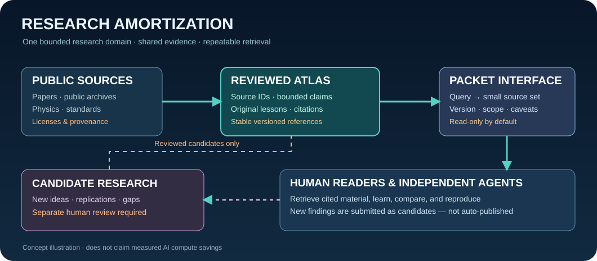
To generate a fresh packet after extracting the ZIP, use python tools/packet_query.py sampling --limit 5 from the project root. This offline webpage does not execute Python.
Explore foundational physics, the mathematics of signals, and the research literature. The bibliography is co-located here. Original PDFs are stored locally; external PDFs are linked unless mirrored with verified redistribution rights.
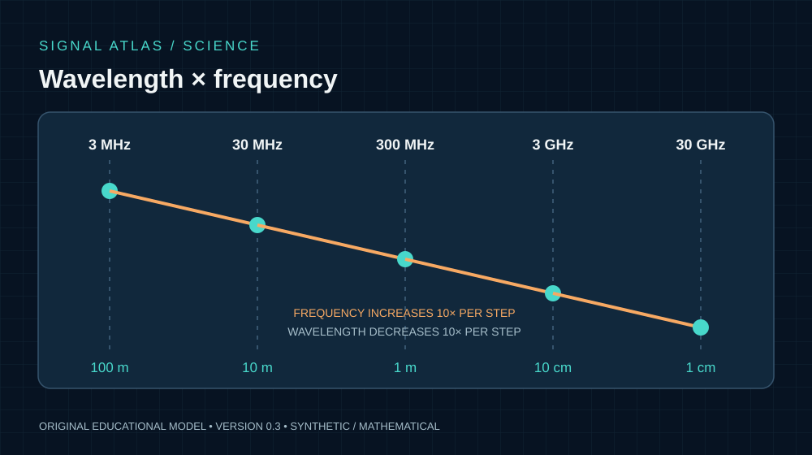
Read the physics, units and propagation assumptions.
PHYSICS FIELD GUIDE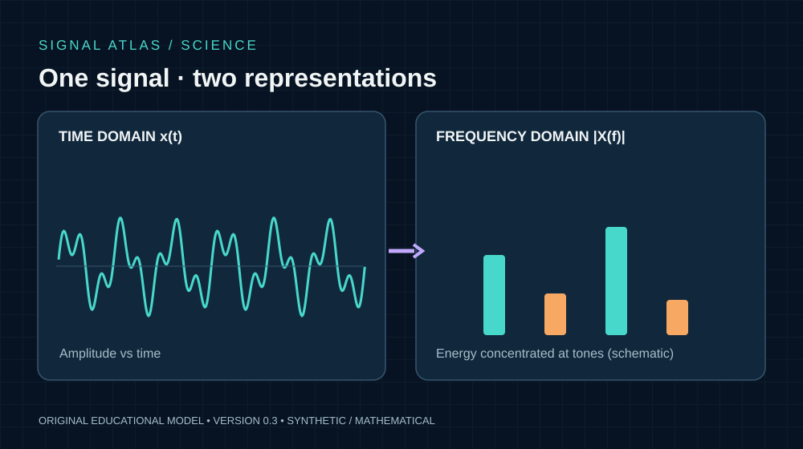
Study how a waveform is represented in the frequency domain.
SIGNAL MATHEMATICS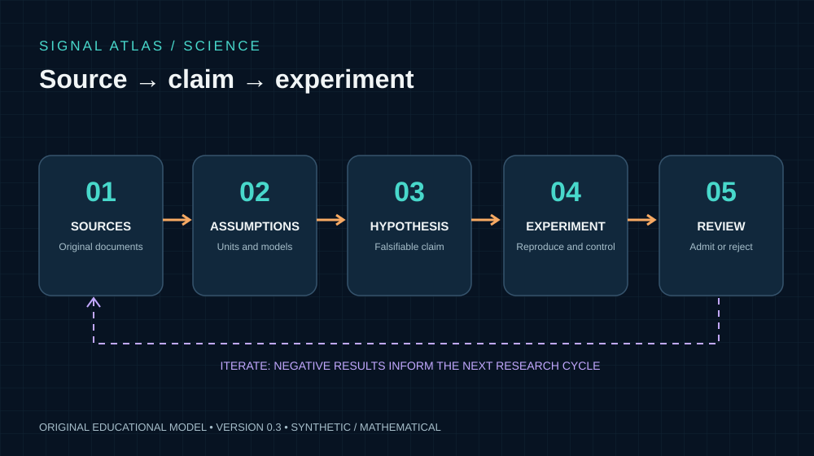
Generate testable hypotheses without promoting unsupported assertions.
KNOWLEDGE DISCOVERYOnline PDF links leave this offline Atlas. The phrase “redistributable source” describes a verified license class, not a locally downloaded file.
This is the research subsection. New materials are discovered, annotated and compared here. A research note is not automatically a trusted conclusion.
Research Desk pages are local files in this downloadable package. Open the original citations from the source cards when examining a claim.